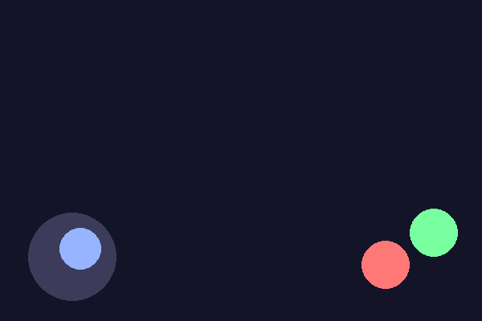

Мобильные игры: сенсорный ввод и виртуальное управление
На мобильном устройстве основной способ ввода — сенсорный экран, и это меняет правила управления игрой.
Мобильные игры охватывают огромную аудиторию, и у телефонов и планшетов другой основной способ ввода: встроенный сенсорный экран вместо клавиатуры и мыши. Внешние клавиатура, мышь или геймпад тоже могут быть подключены к телефону или планшету, но рассчитывать на них как на основной способ управления не стоит — игра должна полноценно работать с одним лишь тачскрином. Начнём с того, как он устроен.
Тачскрин и мультитач
Прикосновение к экрану устройство сообщает игре примерно так же, как Pygame сообщает о клавише — событием с координатами. Ключевая разница в том, что у экрана может быть сразу несколько одновременных точек касания (мультитач) — например, один палец двигает персонажа, а другой в это же время нажимает кнопку стрельбы. В настольном Pygame у события мыши всегда одна точка и одна кнопка; в мобильной разработке приходится с самого начала проектировать под несколько независимых точек касания сразу.
Виртуальные элементы управления
Без физической клавиатуры кнопки движения, прыжка и стрельбы приходится рисовать прямо на экране — виртуальный джойстик, виртуальные кнопки. Это не мелочь, а отдельная часть гейм-дизайна: виртуальные элементы управления должны быть достаточно крупными для пальца (палец гораздо неточнее указателя мыши), не перекрывать важную часть экрана и оставаться отзывчивыми даже при быстрых движениях.

| Клавиатура + мышь (десктоп) | Тачскрин (мобильные) | |
|---|---|---|
| Точность указания | Высокая — пиксель под курсором | Ниже — палец шире курсора |
| Число одновременных вводов | Ограничено количеством клавиш | Несколько независимых касаний (мультитач) |
| Тактильная обратная связь | Физический ход клавиши при нажатии | Экран плоский, но устройство может ответить программной вибрацией |
| Место на экране | Не занимает игровое поле | Виртуальные кнопки перекрывают часть экрана |
Игровое действие как абстракция
Чтобы одна и та же игровая логика работала и с клавиатурой, и с геймпадом, и с тачскрином, полезно отделить игровое действие («двигаться вправо», «прыгнуть») от конкретного физического ввода, который его вызывает. Тогда «прыгнуть» может означать нажатие пробела на десктопе, кнопку A на геймпаде или тап по виртуальной кнопке на телефоне — а код игры, который реагирует на «прыгнуть», не меняется вообще:
# Схематично: один и тот же вызов не зависит от источника ввода
def obrabotat_dejstviya(igra):
if igra.dejstvie_nazhato("prygok"):
igrok.prygnut()
# dejstvie_nazhato() внутри проверяет либо клавишу, либо геймпад,
# либо попадание тапа в область виртуальной кнопки — игрок этого не видитGame в разделе 20.26 закладывает именно это разделение с самого начала.